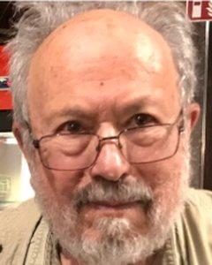
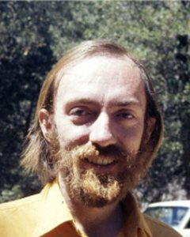

Mga liham mula sa Camp Crame, 1976–77
Roger Posadas, Ezra T. Newman, Allen I. Janis, Kip S. Thorne, William A. Fowler, Robert F. Christy, Maarten Schmidt
Noong 1976, bilanggong pampulitika si Roger sa Camp Crame. Mula sa kaniyang selda, sumulat siya sa dati niyang guro na si Ted Newman, at saka kay Kip Thorne sa Caltech, upang hilingin sa mga pisiko sa buong mundo na igiit kay Marcos ang kaniyang paglaya, at upang humingi ng mga papel na hindi niya nabasa sa apat na taon sa underground. Ito ang mga liham na dumaan sa tanggapan ni Thorne, mula Mayo 1976 hanggang Hunyo 1977, kasama ang transkripsiyon ng bawat isa. Nasa Ingles ang mga liham.
Babala sa nilalaman: inilalarawan ng liham ni Roger noong Abril 1976 ang pagpapahirap, kabilang ang sekswal na pagpapahirap sa isang babaeng ikinulong sa parehong safehouse.
May 14, 1976 Humihingi ng tulong ang Pittsburgh sa Caltech
Ipinasa nina Propesor ng pisika sa University of Pittsburgh at isa sa mga guro ni Roger, kilala sa Newman–Janis method sa general relativity. Alamin pa (magbubukas sa bagong tab) at  

Transkripsiyon
[Typed, on University of Pittsburgh letterhead: Faculty of Arts and Sciences, Department of Physics and Astronomy]
May 14, 1976
Dr. Kip S. Thorne
Kellogg Radiation Laboratory
California Institute of Technology
Pasadena, California 91109
Dear Colleague:
Enclosed you will find a copy of a letter that we recently received from our former student, Dr. Roger Posadas, who until several years ago had been chairman of the Physics Department at the University of the Philippines. His letter makes clear the reason for our own.
We have written to President Marcos (with copies to the other suggested recipients) along the lines suggested by Dr. Posadas. If you feel that you could also write, it might aid in gaining clemency for Dr. Posadas and his wife, and in any case would be greatly appreciated.
Thank you.
Sincerely yours,
[signed] Allen I. Janis, Ezra T. Newman
Professors of Physics
AIJ/ETN:vr
Enclosure
[Stamp: Dr. Kip S. Thorne, rec'd May 20 1976]
April 19, 1976 Sumulat si Roger kay Ted Newman mula sa Camp Crame
Ang kalakip: ang sulat-kamay na liham ni Roger mula sa Stockade 4 sa Punong-himpilan ng Philippine Constabulary, at ngayon ng Philippine National Police, sa Quezon City. Dito ikinulong ang mga bilanggong pampulitika noong batas militar. Alamin pa (magbubukas sa bagong tab), tatlong buwan matapos siyang arestuhin. Inilarawan niya ang pag-aresto at pagpapahirap, hiniling kay Newman na hikayatin ang mga relativist sa buong mundo na sumulat kay Marcos, at humingi ng mga papel na hindi niya nabasa sa apat na taon sa underground.
Babala sa nilalaman: inilalarawan ng liham na ito ang pagpapahirap, kabilang ang sekswal na pagpapahirap.


Transkripsiyon
[Handwritten. A note in red pen at the top, added later: “Letter from Posadas to his former teacher E. T. Newman of Pittsburgh University”]
19 April 1976
Dear Ted,
I am writing this letter to you from prison (Stockade 4, Philippine Constabulary Headquarters, Camp Crame, Quezon City) where I have been detained for my anti-fascist activities since March 25, 1976. I was arrested with my wife, Linda Santiago, and my three-year old son on January 12, 1976 by intelligence agents of the AFP (Armed Forces of the Philippines) after 4 years of being hunted down by the AFP for my antifascist underground activities against the Marcos martial-law regime. Immediately upon my arrest, my wife and I were brought to a “safehouse” for tactical interrogation. I was tortured by means of repeated fist blows and kicks all over the body during a period of one day [one word crossed out] while my wife was stripped of her clothes and kept with my son in a room for six hours with the airconditioner on. As a result of the torture which was inflicted on me by the intelligence officers and soldiers, I got bruises and contusions all over my body and my body ached for a month. I was then detained in the “safehouse”, in isolation and incommunicado, for more than two months before being transferred to the regular detention center where I am currently imprisoned on charges of “subversion”.
Others who were arrested last January suffered worse forms of torture than those which my wife and I experienced. One girl who was kept in the same “safehouse” where I was tortured probably suffered most. She was electrocuted in her genitals, aside from being beaten repeatedly on her shins by a big bottle. Water was then forced through her rectum into her stomach, and when her stomach was full an intelligence agent started kicking her stomach.
Under martial law, torture has been used systematically by the intelligence agents of the Marcos regime on political prisoners in clear violation of the UN Declaration on Human Rights to which the Philippines was a signatory.
My wife is also detained here in Camp Crame, about two buildings away from me, on charges of “subversion”. We are allowed to see each other only once a week (on Sundays) for 7 hours. My son meanwhile is spending part of the week with my parents and the other part with my in-laws. My wife and I see him only three times a week when he is brought to Camp Crame by my parents to visit us. Our arrest and his sudden separation from us have been traumatic for our son. [page 2] It is only now that he is beginning to adjust to his new situation. On humanitarian grounds alone, because of the fact that my wife and I are both in prison, my wife should be released so that she could provide the parental care, love, and guidance that my son needs. Yet the Marcos regime has not released her yet.
We expect to be detained for a minimum of two years unless enough pressure could be built up from abroad for our release. And this is the reason why I am writing you this letter — to request your help in getting our colleagues in relativity and other fields of physics to write [“or telegram” added above the line] Marcos, individually or in groups, asking for the release of my wife and myself. My wife incidentally, is also a physicist who was instructor in physics at the University of the Philippines before she was forced to go underground with me in 1972.
In your letters or wires to Marcos (addressed to: His Excellency, Ferdinand E. Marcos, President, Republic of the Philippines, Malacañang Palace, Manila, Philippines) we would appreciate it very much if you could first of all denounce [written above crossed-out words] the torture of political prisoners by the military, particularly the torture of scientists, which is in clear violation of the UN Declaration on Human Rights, and secondly to ask for the release of my wife and myself on the grounds that we are both physicists whose services are needed by the country for its development. In particular, you could state that as the only Ph.D. specialist in relativity in the Philippines my services as professor and researcher in theoretical physics are of value in developing a good physics program in the country.
The more letters or telegrams you could send to Marcos from various groups of physicists or individual physicists, the greater our chances of being released would be. For Marcos is very careful about projecting a good image abroad in order to mask his fascist rule here. I want to write the other relativists in Europe, Australia, Canada, and Japan about my case, but I do not know how to get in touch with them. I would be very grateful if you could contact them for me and explain my case to them. A petition to Marcos from various relativity centers all over the world, asking for my release, could build a strong pressure on the Marcos regime to release me and allow me to teach again at the University of the Philippines. Please also send copies [page 3] of the letters or wires to the following:
1. Juan Ponce Enrile, Secretary of National Defense, Camp Aguinaldo, Quezon City, Philippines
2. Rep. Donald Fraser, House of Representatives, Washington D.C. 20515
3. Dr. Onofre D. Corpuz, President, University of the Philippines, Diliman, Quezon City, Philippines
4. UN Commission on Human Rights, United Nations, New York, NY 10017
5. Amnesty International, 53 Theobald's Road, London WC1X 8SP, England
6. Col. Rolando J. Posadas, 8 Mahiyain Street, Teachers Village, Quezon City, Philippines
The latter (No. 6) is my father through whom you could get in touch with me.
Meanwhile, I am spending most of my time here in prison studying physics and mathematics. As you know, I was not able to keep abreast of the latest developments in theoretical physics, much less do any physics, during my four years in the underground. Now, I would like to catch up as quickly as possible with the current developments in physics. Conditions here in prison are hard, but at least I am allowed physics and math books. I tried to borrow some journals and books from the University but the ones that are available are not up to date.
I would appreciate it very much if you could send me reprints or xeroxed copies of all the important papers in relativity that have been published since 1971. Please send me also a list of the important books on relativity, gravitation, or cosmology that have been published since 1971. Inasmuch as I have no income at the moment and prices of technical books here are highly inflated, I would be even more grateful if you could send me one or two of the latest good books on relativity. These papers and books could enable me to catch up fast with the latest developments in this field.
I would also appreciate it if you could suggest to me some theoretical research problems which I could work on while I am in prison.
If released, I plan to go back to the University of the Philippines to resume my teaching duties. My wife will probably also go back to college physics teaching at the same university.
[page 4] How is everything in Pittsburgh? What line of research are you currently pursuing now? Is Allen Janis still there? Please give my warmest regards to him and the other faculty members there. I am also planning to write Professors Stehle [reading uncertain], Bergmann, and Penrose.
You can write me and send the publications to me through my home address (8 Mahiyain Street, Teachers Village, Quezon City, Philippines). I hope to hear from you soon.
Thank you very much in advance.
Very truly yours,
Roger Posadas
November 20, 1976 Sumulat si Roger kay Kip Thorne
Sampung buwan sa pagkakakulong, tuwirang sumulat si Roger kay Thorne. Ipinaliwanag niya ang kaniyang gawain, kung paano siya naging bilanggong pampulitika, at ang magagawa ng mga liham kay Marcos, pati ang pagdalo niya sa Ang ika-8 International Conference on General Relativity and Gravitation, na ginanap sa University of Waterloo sa Canada noong Agosto 1977. Opisyal na naimbitahan si Roger pero nakakulong pa siya. Alamin pa (magbubukas sa bagong tab), at hiniling kay Thorne na papirmahin ang iba pang pisiko sa Caltech. May nagsalungguhit, malamang si Thorne, ng mahahalagang bahagi sa pulang tinta.


Transkripsiyon
[Handwritten in blue ink. A note in red pen at the top: “Letter from Posadas to Kip Thorne.” Passages are underlined in red throughout.]
c/o 8 Mahiyain Street
Teachers' Village, Quezon City
Philippines
20 November 1976
Dr. Kip S. Thorne
Kellogg Radiation Laboratory
California Institute of Technology
Pasadena, California 91109
Dear Dr. Thorne,
I am a Filipino theoretical physicist, working in the field of general relativity, who has been detained by the military authorities here for over ten months now on account of my political views and activities against the Marcos martial-law regime. Since under martial law I could be detained indefinitely without trial, I am trying to reach as many relativists as possible throughout the world in order to solicit their help and support in pressuring the Marcos regime to release me in the interest of science. Ted Newman may have already contacted you on my behalf, but I decided to write you from prison anyway to ask you personally for your help in the efforts to secure my release.
Please allow me first to acquaint you with my background and the circumstances leading to my present plight as a political prisoner. I was a student of Ted Newman at the University of Pittsburgh where I obtained my Ph.D. in physics in 1970 with the thesis, “The Motion and Structure of Singularities in General Relativity.” This work was concerned with a new approach to equations of motion, using the Newman-Penrose spin coefficient formalism and based on the behavior of the family of null cones emanating from a singular world line. I also did work with Ted Newman and Alan Held on the Lorentz group and spin- and conformally weighted functions on the sphere. In addition, I was a participant at GR6 held in Copenhagen in 1971. In the Philippines at present, I am one of the less than ten holders of the Ph.D. degree in physics and also the only specialist in general relativity so far.
Upon my return to the Philippines in 1970, I was appointed Assistant Professor of Physics as well as Chairman of the Dept of Physics at the University of the Philippines. I tried to develop a good physics program at the University and to carry on my research work in general relativity, but my efforts were hampered by the government's lack of support for science. Thus frustrated with the poor state of Philippine science and angered by the miserable conditions of Philippine society (as manifested in the institutionalized social injustices and inequalities, the big gap between the few rich and the poor majority, the mass poverty of the people, the rampant graft and corruption in government, and the chronic economic crises of the country), I was moved to organize a group of young, socially concerned Filipino scientists that began calling for massive improvements in the state of Philippine science as well as sweeping reforms in Philippine society. As a result, I was branded a “subversive” by the military authorities, and in November 1971, four months after I came back from GR6, my name was included in a list of student and faculty activists wanted by the government for alleged “subversion”. Since by that time the writ of habeas corpus had already been suspended by Marcos and people were being detained in military stockades without trial, I was forced [page 2] to leave my university teaching and research work and go into hiding to avoid indefinite detention. Eventually, when Marcos imposed martial law in September 1972, established a fascist dictatorship, and suppressed all democratic rights and freedoms, I became involved with the underground movement to fight fascist rule and restore democracy in the Philippines.
Last January 12, 1976 I was caught, along with my wife and our 4-year old son by military intelligence operatives of the regime and brought blindfolded to a secret “safehouse” for interrogation. There, over a period of several days, I was brutally tortured by means of punches, kicks all over the body, karate blows, pistol beatings, and banging of my head against the wall that left my body full of bruises and contusions. In the presence of my son, my wife was also subjected by her interrogators to torture and indignities that left her and my son with a traumatic experience. The military also subjected other apprehended political dissenters (including other scientists and students) to various forms of physical and mental torture such as electric shocks applied to the male or female genitals — all in utter violation of the UN's Universal Declaration of Human Rights to which the Philippines was a signatory.
I was kept incommunicado inside the safehouse for over two months before I was transferred to a regular military stockade for political prisoners and allowed to receive visitors. My physicist-wife was detained in another stockade for female political prisoners, but fortunately she was granted temporary release after 5 months of detention, and she is now teaching physics again at the University of the Philippines. Meanwhile, I was separated three months ago from my fellow political prisoners and transferred to the HPC Stockade in Camp Crame, Quezon City where I have been mixed with criminals and assigned to a tiny, hot, and pest-infested cell. So far I have not yet been tried (before a military tribunal) or formally charged. I expect to be charged with “subversion” for in the eyes of the regime all activities opposed to the regime are deemed “subversive”.
Recently, I received a letter from Prof. Peter Bergmann officially inviting me to attend GR8 which is to be held in Waterloo, Canada next August. I would like very much to attend the Conference because it would give me the opportunity to get back into the mainstream of current research in general relativity. The only problem is that I might not be released in time for GR8, and even if I should be released before the Conference, I still might not be able to attend it because, normally, released political prisoners are prohibited by the regime from travelling abroad due to reasons of “national security”.
Nevertheless, there is a strong chance that I could be released and even perhaps allowed to attend GR8 if a sufficiently strong pressure from relativists and other scientists throughout the world could be applied on the Marcos regime in the form of petitions or letters of appeal to Marcos asking for my release. You see, the Marcos regime, in its anxiousness to project a good image in the international scene and to hide its repressive character, is very sensitive and responsive to foreign pressure regarding its torture, mistreatment, and detention of political dissenters. Amnesty International has already taken up my case and begun pressing the regime for my release. Profs. Newman, Janis, Penrose, Bergmann, Goldberg, and others have also sent letters to Marcos asking for my release in the interest of science. This has placed the military authorities under tremendous pressure to release me but somehow they are still hesitant to release me. [page 3] So I feel that at this point more letters of appeal are needed to increase the pressure and hasten my release.
Could you therefore please send a letter to HIS EXCELLENCY, FERDINAND E. MARCOS, PRESIDENT, REPUBLIC OF THE PHILIPPINES, MALACAÑANG PALACE, MANILA, PHILIPPINES to (1) express concern over the systematic, widespread use of torture on political prisoners here, as documented in the recently published report of Amnesty International; (2) appeal for my release from prison so as to enable me to resume my scientific career and contribute my services to the advance of science, the improvement of Philippine science, and the overall national development efforts of the country which has presently an acute shortage of trained scientific manpower; and (3) urge that I be allowed to represent the Philippines at GR8 next August in the interest of international scientific cooperation and of my own professional growth as a physicist. Could you also please send copies of your letter to the following: (1) HON. JUAN PONCE ENRILE, SECRETARY OF NATIONAL DEFENSE, CAMP AGUINALDO, QUEZON CITY; (2) MAJ. GEN. FIDEL RAMOS, CHIEF, PHILIPPINE CONSTABULARY, CAMP CRAME, QUEZON CITY; and (3) my wife, MRS. LINDA S. POSADAS, DEPARTMENT OF PHYSICS, UNIVERSITY OF THE PHILIPPINES, DILIMAN, QUEZON CITY. Moreover, I would also appreciate it very much if you could ask other physicists at Caltech to sign the letter with you or write similar letters to Marcos and send copies to the abovementioned persons. [This paragraph is marked with a red line in the margin.]
In the meantime, I am trying my best, under the adverse physical and social environment of the stockade, to carry on my studies and keep up with the latest developments in general relativity. At least I am allowed to have books and journals inside the stockade, provided they are considered non-subversive. My main problem here is limited access to the current publications in general relativity for though my wife could borrow books and journals for me from the University library, the University's collection of literatures on general relativity is extremely limited and five years or more behind. I would like to get hold of a wide selection of current literature (especially relativity conference proceedings, collections of review articles on various aspects of relativity theory, and journals such as GRG, J. Math. Phys., Phys. Rev., and Int'l J. Theor. Phys.) but I just don't have the funds to procure these books and journals from abroad. Hence, I would be most grateful if you could send me copies of your papers since 1970 and those of other relativists at Caltech and if you could include my name in your preprint mailing list. You could mail the papers to me at my home address: 8 MAHIYAIN STREET, TEACHERS' VILLAGE, QUEZON CITY.
Thank you very much. I hope to hear from you soon.
Very truly yours,
Roger Posadas
ROGER POSADAS
[Stamp: Received Nov 29 1976, Dr. Kip S. Thorne]
November 30, 1976 Sumulat si Kip Thorne kay Marcos
Sumulat si Thorne kay Marcos kinabukasan matapos niyang matanggap ang liham ni Roger, at pinadalhan ng kopya sina Kalihim ng Tanggulang Pambansa ni Marcos mula 1972 hanggang 1986, na namahala sa makinarya ng batas militar; tumiwalag siya kay Marcos sa EDSA noong 1986. Alamin pa (magbubukas sa bagong tab), Si Fidel V. Ramos, hepe ng Philippine Constabulary noong batas militar, na nagpapatakbo ng Camp Crame. Tumiwalag siya kay Marcos sa EDSA noong 1986 at naging pangulo mula 1992 hanggang 1998. Alamin pa (magbubukas sa bagong tab) at Linda S. Posadas, gaya ng hiling ni Roger.


Transkripsiyon
[Typed, on California Institute of Technology letterhead: Theoretical Astrophysics 130-33]
November 30, 1976
His Excellency
Ferdinand E. Marcos, President
Republic of the Philippines
Malacañang Palace
Manila, Philippines
Dear President Marcos,
This letter concerns Dr. Roger Posadas, who is now being held in prison in the HPC Stockade at Camp Crame, Quezon City. I have known Dr. Posadas' contributions to scientific research since 1969, when he was a student at Pittsburgh University. His research on the motion and structure of singularities in general relativity is among the most important contributions that have been made to this subject during the sixty years since Albert Einstein presented the world with his theory of general relativity.
I was much saddened to learn that Dr. Posadas is being detained in prison. I am saddened (1) because of my warm personal feelings toward him, (2) because in prison he is unable to contribute effectively to the world's scientific research effort on general relativity theory, and (3) because in prison he is unable to contribute to the growth and improvement of Philippine science.
I respectfully urge that, in the interests of international scientific cooperation, and in the interests of the scientific development of your own country, Dr. Posadas be released from prison.
Dr. Posadas has been invited, officially, to attend the International Conference on General Relativity and Gravitation in Waterloo, Canada next August. It is very important for him to attend this Conference. He has been out of direct contact with American and European theoretical physicists since 1970. His future contributions to international and Philippine science would be much enhanced by attending the Conference, since there he can bring himself up to date on recent research and reestablish contact with the international scientific community. I respectfully suggest that he be appointed as the representative of your country at this Conference.
[page 2] Dr. Posadas is a valuable resource for your country and for the world. I urge that we begin utilizing his scientific talents once again.
Respectfully yours,
[signed] Kip S. Thorne
Professor of Theoretical Physics at Caltech
Member, U. S. National Academy of Sciences
Member, International Committee on General Relativity and Gravitation
KST:pg
cc: Hon. Juan Ponce Enrile, Secretary of National Defense, Camp Aguinaldo, Quezon City
Maj. Gen. Fidel Ramos, Chief, Philippine Constabulary, Camp Crame, Quezon City
Mrs. Linda S. Posadas, Department of Physics, University of the Philippines, Diliman, Quezon City
November 30, 1976 Hiniling ni Thorne kina Feynman, Gell-Mann at tatlong kasamahan na pumirma
Nang araw ding iyon, nagpaikot si Thorne ng memo kasama ang isang liham ng grupo para kay Marcos at mga kopya ng dalawang liham ni Roger. Sa sulat-kamay niyang tala, ipinadala ito kina Teoretikal na pisiko sa Caltech na nakabahagi sa Nobel Prize sa Physics noong 1965 para sa quantum electrodynamics. Alamin pa (magbubukas sa bagong tab), Teoretikal na pisiko sa Caltech na nagwagi ng Nobel Prize sa Physics noong 1969 sa pag-uuri ng mga elementaryang partikulo; siya ang nagmungkahi ng quark. Alamin pa (magbubukas sa bagong tab), Nuclear astrophysicist sa Caltech na nagpaliwanag kung paano nililikha ng mga bituin ang mga elemento; nakabahagi siya sa Nobel Prize sa Physics noong 1983. Alamin pa (magbubukas sa bagong tab), Teoretikal na pisiko sa Caltech at, noong 1976, provost ng institusyon. Nagtrabaho siya sa Manhattan Project at kalaunan ay pansamantalang namuno sa Caltech bilang acting president. Alamin pa (magbubukas sa bagong tab) at Astronomong ipinanganak sa Netherlands na nasa Caltech, na nakatuklas noong 1963 na napakalayo ng mga quasar; noong 1976 pinamunuan niya ang dibisyon ng pisika, matematika at astronomiya ng Caltech. Alamin pa (magbubukas sa bagong tab). Sumagot sina Fowler at Christy na pipirma sila. Tatlong kopya ang natira: kay Thorne, kay Fowler at kay Christy.


Transkripsiyon
[Typed, on a California Institute of Technology interoffice memorandum form]
To: [blank on Thorne's copy; Dr. W. A. Fowler and Dr. Robert Christy on the other two]
From: Kip S. Thorne
Date: November 30, 1976
Extension 1598, Mail Code 130-33
Subject: Dr. Roger Posadas
Dr. Roger Posadas is one of less than ten physicists with Ph.D.'s in the Philippines. When he first returned to the Philippines in 1970, from the United States where he was educated, Dr. Posadas was made the Chairman of the Department of Physics at the University of the Philippines. Approximately one year later he was branded a subversive by the Philippine military authorities because of his political activities. Like so many other members of the Philippine intellectual community, he then went into hiding to avoid indefinite detention. He was caught and arrested early this year and has been held in prison, without official charges being brought against him since then. Further details are spelled out in two letters from him, of which I attach copies.
Would you be willing to sign the attached letter which I have written to President Marcos in behalf of Dr. Posadas? If not, would you like to write a separate letter of your own?
KST:pg
Enclosures
[Thorne's copy. In orange at the top: “Posadas.” In red, in Thorne's hand: “Pls send (1) this memo, (2) the attached ‘group letter’, (3) Xox's of the letters from Posadas TO: (1) Richard Feynman, (2) Murray Gell-Mann, (3) Willy Fowler, (4) Robert Christy, (5) Maarten Schmidt. Thanks. Kip.” A first attempt at Feynman's name is crossed out. In blue, added later: “yes” beside Fowler and Christy, and “done 12/6/76 PG.”]
[Fowler's copy. Stamped “⇒ KST” at the top. In red: “Kip, I will be willing to sign when I return Monday, Dec. 12.” Initialed by Fowler.]
[Christy's copy. Stamped “Received Dec 8 1976, Office of the Provost” and “Received Dec 8 1976, Dr. Kip S. Thorne.” A faint handwritten note: “CFC — tell KST ‘yes, I will sign’” (partly illegible), initialed RFC, 12/8.]
December 15, 1976 Sumulat sina Fowler, Christy at Schmidt kay Marcos
Ipinadala ang liham ng grupo, nilagdaan nina William Fowler, Robert Christy, ang provost ng Caltech, at Maarten Schmidt, ang pinuno ng dibisyon nito sa pisika, matematika at astronomiya. Makakabahagi si Fowler sa Nobel Prize sa Physics noong 1983.


Transkripsiyon
[Typed, on California Institute of Technology letterhead: Theoretical Astrophysics 130-33]
December 15, 1976
His Excellency
Ferdinand E. Marcos, President
Republic of the Philippines
Malacañang Palace
Manila, Philippines
Dear President Marcos,
We are writing this letter out of concern for Dr. Roger Posadas, who was once the Chairman of the Department of Physics of the University of the Philippines, but who is now a political prisoner at Camp Crame, Quezon City.
As scientific colleagues of Dr. Posadas, we are concerned about his welfare and about the fact that in prison he is unable to contribute to international scientific research or to the scientific development of your country. In the interest of international scientific cooperation, and in the interest of alleviating your country's acute shortage of Ph.D.-level physicists, we urge that Dr. Posadas be released from prison.
We also urge that Dr. Posadas be allowed to represent the Philippines at the International Conference on General Relativity and Gravitation in Waterloo, Canada next August. This would facilitate reestablishing scientific ties between the physicists of your nation and of ours, and it would strongly enhance Dr. Posadas' ability to contribute to future scientific development.
Respectfully yours,
[signed] William A. Fowler, Institute Professor of Physics
[signed] Robert F. Christy, Professor of Theoretical Physics, Vice President and Provost of the California Institute of Technology
[signed] Maarten Schmidt, Professor of Astronomy, Chairman, Division of Physics, Mathematics, Astronomy
cc: Hon. Juan Ponce Enrile, Secretary of National Defense, Camp Aguinaldo, Quezon City
Maj. Gen. Fidel Ramos, Chief, Philippine Constabulary, Camp Crame, Quezon City
Mrs. Linda S. Posadas, Department of Physics, University of the Philippines, Diliman, Quezon City
[In red, below the copy list: “RFC, WAF, MS,” the signers' initials]
December 21, 1976 “Salamat sa mga liham ng mga relativist”
Nagpasalamat si Roger kay Thorne. Umeepekto ang presyon: inirekomenda na ng Kalihim ng Tanggulang Pambansa ang agaran niyang paglaya.

Transkripsiyon
[Handwritten. In red at the top: “file”]
c/o Department of Physics
University of the Philippines
Diliman, Quezon City
Philippines
21 December 1976
Dear Professor Thorne,
Thank you very much for your letter to President Marcos on my behalf, a copy of which was received by my wife yesterday. Your letter will surely contribute significantly to the growing pressure for my release from detention. In fact, thanks to the letters of relativists to Pres. Marcos, the Secretary of National Defense recently recommended to Pres. Marcos that I be released immediately. The military authorities are also inclined to let me attend GR8 next August provided I behave myself upon my release, i.e., I no longer show any sign of opposition to the martial-law regime. So I am very hopeful that I would be released very soon and that I would be able to make it to GR8.
Ted Newman and Roger Penrose have sent me their papers on H-space and twistor theory, and these are what I am studying in prison. I hope to be able to do research in general relativity again as soon as I get released.
Again, thank you very much for your letter. Best wishes to you for Christmas and the New Year.
Sincerely yours,
Roger Posadas
[Stamp: Received Jan 4 1977]
January 15, 1977 Nasa bilangguan pa rin
Isang buwan matapos ang rekomendasyon ni Enrile, nakakulong pa rin si Roger. Hiniling niya kay Thorne na iparating ang kaniyang pasasalamat kina Christy, Fowler at Schmidt, at humingi ng mga papel ni Thorne tungkol sa black hole.

Transkripsiyon
[Handwritten. In red at the top, in Thorne's hand: “PG / Pls (1) be sure he is on OAP mailing list (2) give Christy, Fowler, & Schmidt copies of the attached letter, if you didn't do so already. Thanks Kip.” A crossed-out item between them. In blue, added later: “(He is)” and “done.” OAP was Caltech's “Orange Aid Preprint” series.]
c/o Dept. of Physics
University of the Philippines
Diliman, Quezon City
Philippines
15 January 1977
Dear Dr. Thorne,
I am writing once more to thank you for requesting Drs. Christy, Fowler, and Schmidt to write Pres. Marcos on my behalf. Please kindly pass on to them the enclosed letter, expressing my appreciation to them for their support.
It has been a month now since National Defense Secretary Enrile sent his recommendation for my release to Pres. Marcos, but based on our inquiries this has not yet reached Pres. Marcos. Hence, I am still here in prison. My family is trying to contact people in Malacañang Palace who could help in following up my case with the President.
Another reason why I am writing you again is to ask you to please kindly send me reprints of your papers on relativistic astrophysics, black holes, and computer programs for general relativity. Thank you very much.
Very truly yours,
Roger Posadas
January 15, 1977 Nagpasalamat si Roger kina Christy, Fowler at Schmidt
Ang kalakip na liham ng pasasalamat, na tinatakan bilang natanggap ng Office of the Provost ng Caltech.

Transkripsiyon
[Handwritten]
c/o 8 Mahiyain Street
Teachers' Village
Quezon City, Philippines
15 January 1977
Dr. Robert F. Christy
Dr. William A. Fowler, and
Dr. Maarten Schmidt
California Institute of Technology
Pasadena, California, U.S.A.
Dear Drs. Christy, Fowler, and Schmidt,
I am writing to let you know that my wife received the copy of your letter to Pres. Marcos on my behalf and that I deeply appreciate the help and support which you have extended me through that letter.
In response to the pressure from the international scientific community for my release, the Secretary of National Defense, Juan Ponce Enrile, has already recommended to Pres. Marcos that I be released immediately. This recommendation has not yet reached Pres. Marcos, but I hope to be released as soon as it reaches him. Your letter, I am sure, will help significantly in hastening my release.
Thank you very much for your kind support.
Very truly yours,
Roger Posadas
ROGER POSADAS
[Stamp: Received Jan 31 1977, Office of the Provost]
June 20, 1977 Ang huling tala sa file ni Thorne
Makalipas ang limang buwan, ipinasa ng tanggapan ni Thorne ang pinakahuling balita kay John Parmentola sa Panel on Public Affairs ng MIT: isang tinipang sipi ng liham ni Roger noong Enero at isang talang ito na ang pinakabagong balita nila. Hindi lumaya si Roger hanggang Oktubre 1978.

Transkripsiyon
[Typed excerpt, with handwritten notes. “Roger Posadas” is written and crossed out at the top.]
Jan. 15, 1977
It has been a month now since National Defense Secretary Enrile sent his recommendation for my release to President Marcos, but based on our inquiries this has not yet reached President Marcos. Hence, I am still here in prison. My family is trying to contact people in Malacanang Palace who could help in following up my case with the president.
[Handwritten, circled] John Parmentola, (617) 253-4811, MIT, 77 Mass Ave, Panel on Public Affairs, Cambridge Mass 02139, Room 6-214 [with an arrow:] “Mailed to on June 20.”
[Handwritten below] Passage from letter written by Dr. Roger Posadas to Kip Thorne, dated Jan 15, 1977. As of June 20, 1977 this is the most recent correspondence that Kip has. Presumably Ted Newman (E.T. Newman) at Pittsburgh will have more recent information.